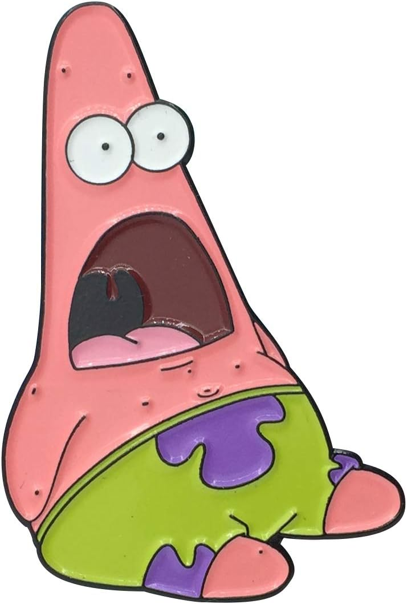

Meu site é um portal completo para o universo de Bob Esponja Calça Quadrada, feito com a paixão de um verdadeiro fã. Ele foi cuidadosamente criado para ser o seu destino principal para tudo relacionado à Fenda do Biquíni, desde os episódios mais clássicos até as curiosidades mais obscuras sobre os personagens. Aqui, você pode explorar a rica história do desenho, entender como Stephen Hillenburg criou essa obra-prima e descobrir o que torna cada personagem tão especial. Nosso objetivo é criar uma comunidade onde a diversão e a nostalgia andam de mãos dadas, celebrando o legado de um dos desenhos animados mais influentes de todos os tempos.
Além de ser um guia detalhado sobre a série, meu site é um espaço interativo. Apresentamos análises aprofundadas de episódios, listas dos momentos mais hilários e perfis completos dos personagens, desde o sempre otimista Bob Esponja até o gênio do mal Plankton. Acreditamos que a magia de Bob Esponja está em sua capacidade de nos fazer rir e nos lembrar da importância da amizade e da imaginação. É por isso que, em cada seção do site, você encontrará uma homenagem sincera a essa animação que marcou tantas infâncias (e continua marcando!). Junte-se a nós e celebre a vida em um abacaxi debaixo do mar.
Sobre o Patrick Estrela Patrick Estrela é um dos personagens mais amados e engraçados de Bob Esponja Calça Quadrada. Sendo o melhor amigo de Bob Esponja, a estrela-do-mar rosa vive debaixo de uma rocha ao lado do abacaxi de Bob e está sempre pronto para uma nova aventura. Embora não seja o mais inteligente da turma, sua lealdade e sua visão de mundo simplista são a base de muitas das histórias da série. O que torna Patrick tão especial é a sua personalidade despreocupada e o seu bom humor. Juntos, ele e Bob Esponja se metem em confusões hilárias, transformando as tarefas mais simples em desafios absurdos, como tentar vender chocolates de porta em porta ou passar um dia inteiro caçando águas-vivas. Patrick nos ensina que, às vezes, as melhores coisas da vida são as mais simples, e que ter um amigo ao seu lado torna qualquer jornada mais divertida.

PAPA